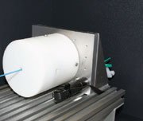

Academic bedside robots · shibaura_zakaria2012
Foolproof guide
Shibaura Institute of Technology tele-operated foolproof catheter guide system (ER-fluid master, roller slave)

1 / 2

- Family
- Academic bedside robots (academic)
- Devices
- catheter, "compliant with catheter sizes 3-11 Fr" (Sec. 8)
- Degrees of freedom
- 2 (thrust and rotation) on the slave and on the master (Sec. 8)
- Push
- Other drives
- Twist
- Rotating drive unit
- Tested up to
- Bench
- Sim-to-real
- None found — No simulation-trained controller found for this robot.
Testing
- Highest level
- Bench
- What was tested
- initial thrust and rotation tracking of the slave following the master; no phantom, trial counts N.R. (Sec. 8, Figs. 10-11)
- Key numbers
- rotation tracking error < 1 deg with time delay < 10 ms; thrust tracking shows "1:5 distance differences" and a tracking error in the second stroke (Sec. 8); design limits: translational velocity below 10 mm/s, collision threshold 0.12 N (Sec. 6)
Mechanism
- Push (translation)
- other: "passive roller as thrust mechanism while holding the catheter", rubber with a high friction coefficient; stepping motor, DC motor and slide rail labelled in Fig. 9, their roles not stated (Sec. 8)
- Twist (rotation)
- rotation of the slave housing about the catheter axis (Fig. 9 "Rotation movement"); actuator N.R.
- Device range
- 3-11 Fr (Sec. 8)
- Target anatomy
- interventional radiology catheterisation (vessel not specified)
Sensing and interface
- Force sensing
- claimed but not shown: "It is installed with a force sensor to enable haptic feedback" and "For future work, force sensors will be attached to the slave robot" (Sec. 8); design threshold: contact force above 0.12 N is treated as a collision (Sec. 6)
- Leader and haptics
- master tool with 2 DOF (thrust on a sliding screw and bearing, rotation) and electro-rheological (ER) fluid as a passive actuator that stiffens when force is detected (Sec. 8); not demonstrated
- Imaging
- N.R. (concept: DSA, surgeon in a separate control room, Fig. 1)
- Sterility
- requirement only: "the parts of the catheter must be sterilizable" (Sec. 8)
Size
- Footprint (mm)
- N.R. ("lightweight, compact", Sec. 8)
- Mass (kg)
- N.R.
Simulation
- Simulation model
- none found (control software in MATLAB Simulink; system specified in CONSENS)
- Sim-trained controller
- none found
Versions
- Lineage
- single prototype (Prod. Eng. Res. Devel. 7:81-90; online 20 Nov 2012, issue dated 2013)
Sources
- Development of foolproof catheter guide system based on mechatronic design · Production Engineering, 2012 · doi:10.1007/s11740-012-0430-6 [zakaria2012_development]
Notes
- Notes
- Added by F4 2026-10-14 from the A8 title-only lead (snowball via li2024_review). Mostly a CONSENS design-methodology paper; the prototype is a 2-DoF master-slave with bench tracking only. Surname is Che Zakaria (bib key zakaria2012_development). Not in S8_systems.csv.
This record
- Read level
- full — full (zakaria2012_development, 2026-10-14)
- Picture
- zakaria2012_development Fig. 9 (slave robot photo, top left of the figure), Prod. Eng. Res. Devel. 7:81-90, doi:10.1007/s11740-012-0430-6; native raster p. 8 (228 x 152) ↗ — licence: publisher copyright; grade C
- Picture changes
- native extract; cropped to drop the orange thrust arrow at the left (two small cyan rotation-arrow marks on the bracket remain); not upscaled
- Found by
- gap: Gap searches for robots the other searches missed.
- Data
- JSON · YAML:
records/robots/shibaura_zakaria2012.yaml - Correction
- Suggest a correction [repository not created yet]